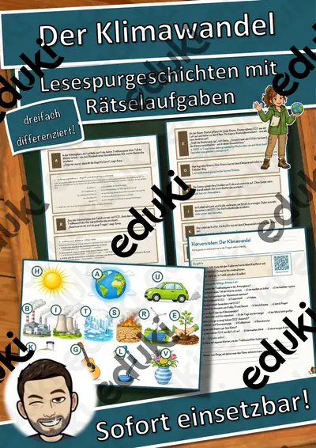

Klimawandel und Klimaschutz: Arbeitsblätter für Klasse 5–10 (Erdkunde)
Klimawandel zählt in Erdkunde, Biologie und Politik zu den Pflichtthemen der Sekundarstufe I und taucht zunehmend schon in der Grundschule als Umweltthema auf. Entscheidend ist die Trennung von Wetter, Klima und menschlichem Einfluss.
Zum Themenkern zählen Treibhauseffekt, Kohlenstoffdioxid und Erderwärmung. Als Vertiefung bieten sich Klimaschutz und Ozonloch an, am Ende steht oft Klimakonferenzen.
In den Lehrplänen der Länder ist das Thema im Fach Erdkunde verankert, meist in der Sekundarstufe I (Klasse 5–10). Die Jugendlichen erklären den Treibhauseffekt, werten Daten aus und bewerten Maßnahmen zum Klimaschutz.
Im Alltag einer Lehrkraft zählt, dass Material sofort einsatzbereit ist: Die Blätter zu Klimawandel und Klimaschutz greifen Kohlenstoffdioxid, Erderwärmung und Klimaschutz auf, lassen sich ausdrucken und kommen mit Lösungen, damit die Vorbereitung kurz bleibt. Leistungsstarke und schwächere Lesende erhalten über die Lesespurgeschichten Texte in drei Stufen.
Die Auswahl zum Thema umfasst derzeit 6 Titel, zum Beispiel Der Klimawandel, Ozonloch Lückentext mit Wortspeicher und Fridays for Future Lückentext mit Wortspeicher. Dazu zählen 1 Lesespurgeschichte, 1 Prüfungstraining und 4 Lückentexte mit Hörverstehen für Klasse 5–9. Lassen Sie Diagramme zur Temperaturentwicklung erst beschreiben und dann deuten; so trennen Lernende Beobachtung und Interpretation.
Das gehört zum Thema
Passende Arbeitsblätter und Materialpakete

Der Klimawandel – Lesespurgeschichte mit Rätselaufgaben (Klasse 8)

Der Klimawandel – Prüfungstraining Erdkunde (Klasse 9)

Ozonloch Lückentext mit Wortspeicher Hörverstehen und Suchsel

Fridays for Future Lückentext mit Wortspeicher Hörverstehen und Suchsel

Klimawandel Lückentext mit Wortspeicher Hörverstehen und Suchsel

Klimaschutz Lückentext mit Wortspeicher Hörverstehen und Suchsel
Häufige Fragen
Für welche Klassenstufe passen die Arbeitsblätter zu Klimawandel und Klimaschutz?
Passend sind Klasse 5–9. Von den 6 Titeln wenden sich die meisten an Klasse 5, einige lassen sich differenzierend auch in benachbarten Stufen nutzen.
Welche Inhalte decken die Materialien zu Klimawandel und Klimaschutz ab?
Inhaltlich reicht die Auswahl von Treibhauseffekt über Kohlenstoffdioxid und Erderwärmung bis zu Ozonloch; Details stehen bei den einzelnen Materialien.
Wie setze ich Klimawandel und Klimaschutz im Unterricht ein?
Lassen Sie Diagramme zur Temperaturentwicklung erst beschreiben und dann deuten; so trennen Lernende Beobachtung und Interpretation. Danach genügt meist ein Material als Einstieg und eines zum Üben.
Mehr Material nach Fach und Klasse
- Alle Materialien Biologie
- Arbeitsblätter Biologie Klasse 5
- Arbeitsblätter Biologie Klasse 6
- Arbeitsblätter Biologie Klasse 7
- Arbeitsblätter Biologie Klasse 8
- Arbeitsblätter Biologie Klasse 9
- Arbeitsblätter Biologie Klasse 10
- Unterrichtsmaterial Klasse 5
- Unterrichtsmaterial Klasse 6
- Unterrichtsmaterial Klasse 7
- Unterrichtsmaterial Klasse 8
- Unterrichtsmaterial Klasse 9
- Unterrichtsmaterial Klasse 10
Verwandte Lehrplanthemen
- Energie, Rohstoffe und Umwelt (Erdkunde, Klasse 4–10)
- Erdbeben und Vulkane (Erdkunde, Klasse 5–9)
- Rhein, Donau und die großen Flüsse (Erdkunde, Klasse 4–8)
- Alpen und Gebirge (Erdkunde, Klasse 4–8)
- Klimazonen und Lebensräume der Erde (Erdkunde, Klasse 5–9)